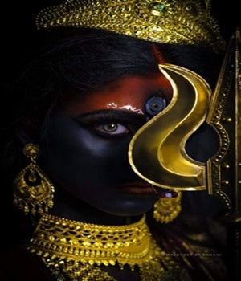

Day 7
Parthiv Gohil
Singer - Information
Real Name: Parthiv Gohil
Nickname: Parthiv
Profession: Singer Famous for gujrati singer
Parthiv Gohil is a well-known Indian singer, particularly in the Gujarati music industry. He has made a significant impact with his melodious singing and versatility in various music genres. Parthiv Gohil is celebrated for his contributions to both traditional and contemporary Gujarati music. His performances and recordings have garnered a substantial fan base and recognition in the world of music.
Kaalaratri
Information
Considered the most ferocious form of Goddess Durga, Kalaratri is revered on Saptami. It is believed that Parvati removed her pale skin to kill the demons Sumbha and Nisumbha. The colour of the day is royal blue. The Goddess appears in a red-coloured attire or tiger skin with a lot of rage in her fiery eyes, her skin turns dark. The red colour portrays prayer and assures the devotees that the Goddess will protect them from harm. She is celebrated on Saptami (seventh day). In eastern India, Maha Saptami is observed on this day and Bodhon of shardiya Durga Puja.
GREY

Color - Information
On the seventh day of Navratri or Saptami, Goddess Kaalratri is worshipped. She is also known as Kali and is considered the fiercest form of Maa Durga who destroyed all the demons, ghosts and evil spirits. Her fierce energy is embodied in Grey, a shade between black and white, which signifies balance and neutrality. While Navratri is all about bright colors, why not this time experiment and go with the colour of Maa Durga.